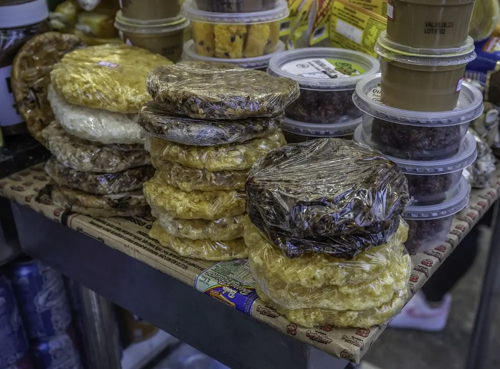
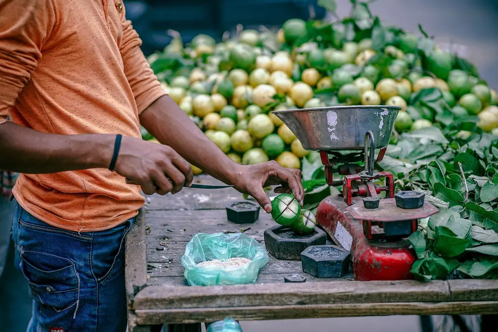

Você quer o pão quentinho, mas não sabe se o padeiro já passou.
O Tá Chegando mostra quem está circulando perto de você, e você pode pedir pra ser avisado quando o vendedor chegar. Do outro lado, quem vende vê onde tem cliente perto da rota. A rota e o trabalho continuam sendo dele.
- Você vê quem está circulando perto.
- Dá pra olhar no mapa o vendedor chegando.
- Se quiser, toca em “Me avise quando chegar”. Quem decide a rota é o vendedor.
Todo dia tem gente passando na rua com algo pra vender. E tem gente procurando.
O comércio anda, mas a informação nem sempre vai junto.
O Tá Chegando existe pra aproximar essas duas pontas, sem mexer na autonomia de quem trabalha.
Sempre passa alguém vendendo alguma coisa.
Tem quem vá a pé, de bike, de moto, de carro ou empurrando carrinho. Fruta, doce, artesanato, serviço.



Como funciona, de cada lado.
Para quem vende
- Faça seu cadastro com e-mail.
- Diga o que você vende e por onde costuma passar.
- Grave sua rota, escolha os dias e use o app enquanto roda.
Para quem procura
- Veja quem está circulando perto.
- Olhe no mapa quem vem chegando.
- Toque em “Me avise quando chegar”.
A localização e a disponibilidade dos vendedores podem variar. O que vale é o que aparece no aplicativo.
Sabe de contas, de lei, de design? Dá pra ajudar.
Na Rede de Apoio só entram empresas verificadas. A nossa equipe confere cada uma antes.
A Rede de Apoio ainda está sendo montada.
Quem está por perto?
Se você vende, crie sua conta. Se você procura, deixe seu contato que a gente avisa do lançamento.